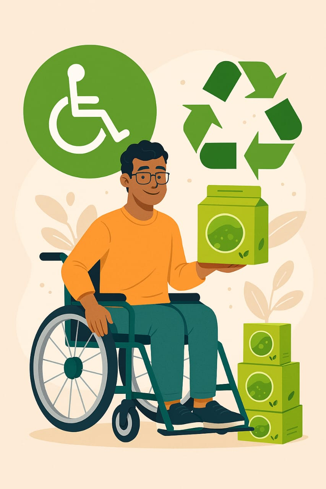

O futuro da coméstica é sustentável!
Criamos embalagens inovadoras, inclusivas e ecológicas
Veja como funcionaProdutos Ecológicos
Utilizamos recursos naturais para fazer as embalagens, e as sobras podem ser reaproveitadas, dessa maneira aproveitando grande parte da matéria-prima sem desperdicios.

Comunicação como ferramenta
Ao prezar pela inclusão do maior público possível, a Claim sempre busca manter um canal de comunicação forte com os clientes! Afinal, comunicação é a chave.
Mais acessibilidade
Pensando em pessoas com dificuldades fisicas (como cegueira parcial/completa ou dificuldades para segurar produtos) a marca CLAIM busca fábricar seus produtos com formatos especificos para abranger um público maior, utilizando de ferramentas, como o Braille e formatos de embalagens que ajudem na fixação das mãos.
Menos Poluição
Por serem feitas de materias ecológicos, além das embalagens poderem ser reutilizadas, ao serem descartadas, apresentarão um tempo menor de degradação do que o convencional.
Caseína
Usamos a caseína, proteína encontrada no leite, que partilha de uma propriedade comum do plástico convencional. Além do seu comportamamento semelhante a do plástico comum, ela consegue ser facilmente modelável antes que ela endureça.

Preço Acessível
Acessibilidade e ecologia não precisam custar caro! Oferecemos preços justos e proporcionais à qualidade do produto.
As embalagens da marca CLAIM são pensadas para abranger um grande público, prezando pela inclusão de Pessoas com Deficiência (PcD). Além disso, os materiais usados para a produção das embalagens são escolhidos a dedo para preservar o meio ambiente e não prejudicá-lo.
Os formatos das embalagens são desenhados para manter a firmeza nas mãos (auxiliando, assim, pessoas com deficiência física), e as cores levam em consideração pessoas com certo grau de daltonismo
A fabricação das embalagens é feita utilizando a caseína, uma proteína natural encontrada no leite, que compartilha de uma característica comum do plástico usual. Dessa maneira, é possível criar o bioplástico que, diferente do plástico clássico, é biodegradável e não causa impactos severos ao meio ambiente, além de se decompor muito mais rápido que plásticos comuns.
Dessa forma, as embalagens da marca CLAIM focam em reduzir os impactos na natureza. A decomposição rápida dos materiais os auxilia a se tornarem matéria orgânica ou retornarem à natureza, com isso diminuindo significativamente o desgaste do meio ambiente.
Processo de produção
Preparar o material
Esquentar o leite em uma panela, em uma temperatura que ele não ferva.
Separar
Coloca o leite quente em outro compartimento e adiciona vinagre aos poucos, até notar que o soro do leite está se formando.
obs: o leite misturado ao vinagre vai formar uma substância hetrogénea, o soro do leite é a "água amarela", a outra parte vai formar "pedaços" sólidos.
Filtração
Filtrar o leite com um pano para serapar o soro do leite e a Caseína (Caseína é justamente os pedaçõs sólidos, um polímero natural, com propriedades semelhantes a do plástico).
Moldes
Agora, a Caseína poder ser moldável, seja com as mãos ou usando moldes.
Repouso
A Caseína endurece e fica muito resistente após cerca de 2 semanas.
Informações
O projeto CLAIM teve seu planejamento iniciado em setembro de 2025, tomando forma a partir de pesquisas científicas, levando em consideração conceito físicos e químicos para a estruturação geral de nosso objetivo final: diminuir impactos ambientais a partir da substituição de materiais usados na fabricação de embalagens, por materiais naturais e biodegradáveis.
O foco não é apenas diminuir os custos de produção de embalagens comuns, mas também diminuir a contaminação e poluição ambiental, a partir de mudanças sutis.
Pretendemos alcançar boa parte dos vendedores de cosméticos locais, da cidade de Maracanaú - Ceará, até o final de 2028.
Prezamos por precisão e qualidade constantes, com um grupo de entregas consistente.
Os custos para a produção da matéria-prima são baixos pois, essencialmente, é necessário apenas vinagre e leite. Dessa forma, os custos podem variar entre 250 e 300 reais levando em conta os materiais usados, o período de espera para que a caseína se torne moldável, o ambiente em que é armazenada e o tempo gasto pelos produtores para a fabricação.
O CLAIM atua no mercado de embalagens com uma proposta inovadora: desenvolver embalagens biodegradáveis e inclusivas. O cenário global está em alerta devido ao aumento das crises ambientais e o plástico convencional, muito usado em embalagens, está diretamente ligado ao crescimento da poluição. Ao utilizarmos a Caseína como matéria-prima para a produção de embalagens, é notável a sua eficácia em se degradar no meio ambiente sem causar grandes impactos na natureza, reduzindo significativamente os efeitos negativos ao ambiente. Isso representa um grande atrativo para empresas que buscam adotar embalagens sustentáveis, especialmente aquelas da área de cosméticos naturais, que desejam reforçar a ideia de sustentabilidade e pureza em suas marcas.
Equipe Claim


Valter da Costa
Produtor
Sempre disposto, com energia suficiente para realizar qualquer coisa.
Mais informaçõesYan Vitor
Pesquisador
O estado de espírito é como a melodia, se anima, desacelera e as vezes surpreende.
Mais informações